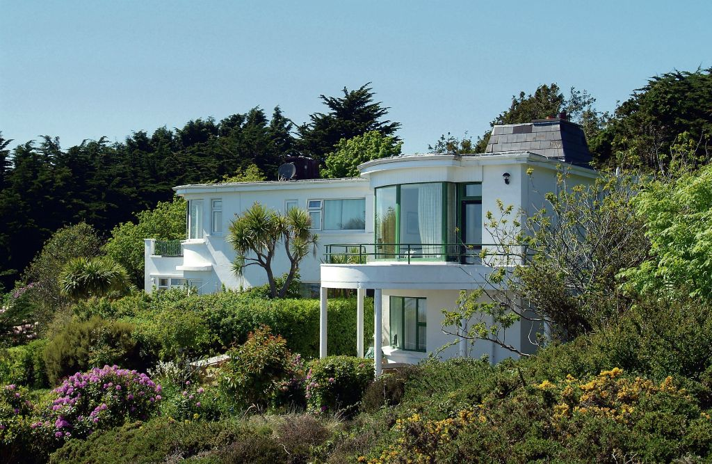
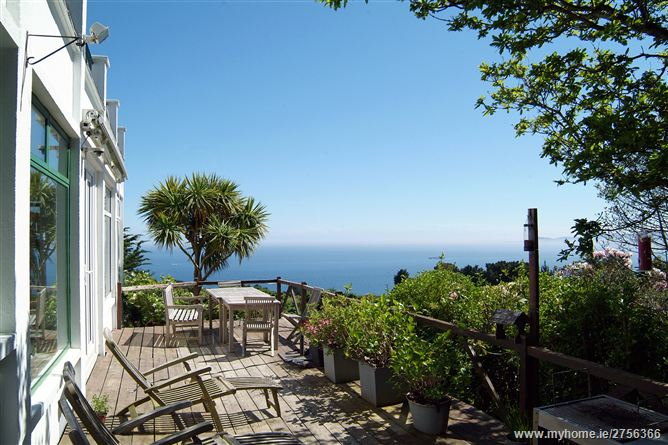

Welcome
"Windgate" is situated on Windgate Road which can be accessed via Carrickbrack Road and Balkill Road. The property is nested aloft the peninsula of Howth Head below the Ben of Howth and is only 2 km to Howth Village and 15 km to Dublin City Centre. "Windgate" enjoys commanding views of the Irish Sea in a 180º vista stretching from the Baily Lighthouse to Dún Laoghaire and Dalkey ending in a mountainous back drop to a most serene city skyline.
Howth Head is located in a protected "Special area of Conservation." Most of the headland is hilly with gorse while peaks include the Black Linn, Ben of Howth, Shielmartin Hill, Carrickbrack and Dunhill. "Windgate" is a detached art deco family residence with 4 reception rooms, 7 bedrooms, 7 bathrooms and external balcony terrace areas. The property is south facing to maximise the views from each room, most rooms have views of the sea.
There is a large timber deck off the kitchen/dining area which is elevated above the gardens with spectacular sea views.